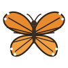
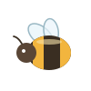
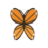
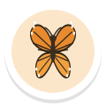
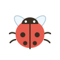
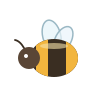
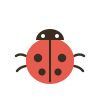

Phones drawn at 64% of a 390 pt iPhone; hoop sizes are to that scale.
The net is the hit area: what the hoop covers is what says hello. Gentle game (under 13, Calm, Easier butterflies) catches at least everything today's game catches. Quick wings (13+ by default) has a smaller hoop at tier 1, livelier flight and a longer round. Visitor art is the app's own; the net is drawn in code from the Shed net colours.


Resting. The net waits bottom right, in thumb reach. Tier 1 hoop 96 pt across (48 pt circle radius, as today).
Drag. On touch the hoop jumps under the finger, then follows with a soft lag (about 60 ms). Gentle game: the finger point counts too, so the lag never costs a hello.


Hello. The visitor folds its wings into the mesh (0.25 s), the net lifts 12 pt, then the visitor flutters up and away free. Sticker and name pill as today.
Gentle hello (Gentle Net badge). A visitor resting on a flower: the net lowers softly over it and a tiny heart shows. Evening sky, tier 3 gold net.

Turn tell. Before its one turn a visitor flares its wings and slows for 0.4 s (dotted ring here only to point it out). Hoop is 40 pt radius at tier 1.

Short perch. 1 in 3 visitors land once, for 2 s (3 s in the gentle game). Tier 2 silver net, 56 pt radius.
Settings > Play. Shown for 13+ and 18+ with Calm off. Off by default, so teens and adults get Quick wings.
Visitors page. A small "Quick wings" chip and its own blurb, so a teen knows which game they are in.

Reduce Motion. Visitors rest as today (8 s). A tap shows a still net frame over the visitor (0.2 s cross-fade), no travel, no swing, no lift.
Hoop radius = catch radius. Colours from tool_net_t1..t3 (wood, silver, gold with a sparkle). Drawn with SwiftUI shapes, no new image files.